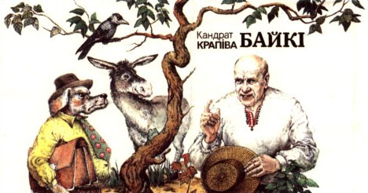

Назад да меню
Байкi Кандрата Крапiвы

Відэа на тэму «К. Крапіва. Байка. Алегорыя»
1. Байка «Ганарысты Парсюк» (ЧЫТАЦЬ)
Тэст па байцы «Ганарысты Парсюк»
2. Байка «Дзед і баба» (ЧЫТАЦЬ)
3. Байка «Дыпламаваны Баран» (ЧЫТАЦЬ)
4. Тэсты для самаправеркі
Творчасць нашых вучняў па тэме «Байкi Кандрата Крапiвы»
Назад да меню